Research & Publications
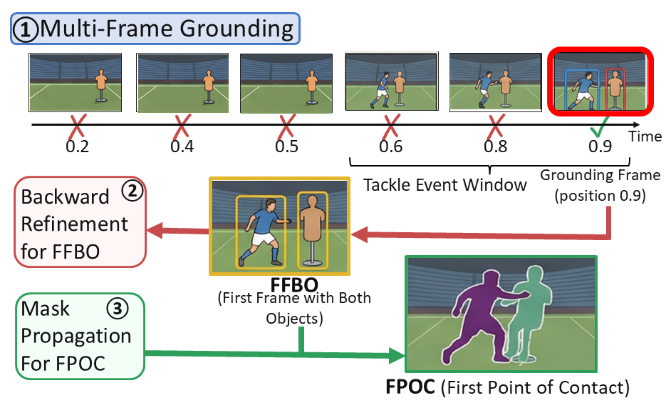

Latent-skill offline RL framework for contact-rich robotic manipulation. Improves long-horizon planning while preserving behavior support and low-level execution quality across D4RL, Adroit, and RoboSuite benchmarks.
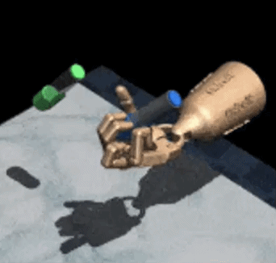
Masked latent-skill inference for robust long-horizon planning under missing or degraded context. Focuses on partial observability in offline reinforcement learning and context-robust skill sequencing.
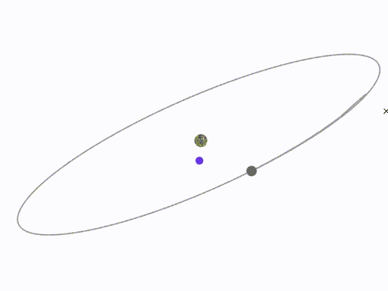
Developed the SA3C algorithm with an attention mechanism to improve sample efficiency and decision quality for low-thrust spacecraft trajectory optimization in geocentric and cislunar missions.
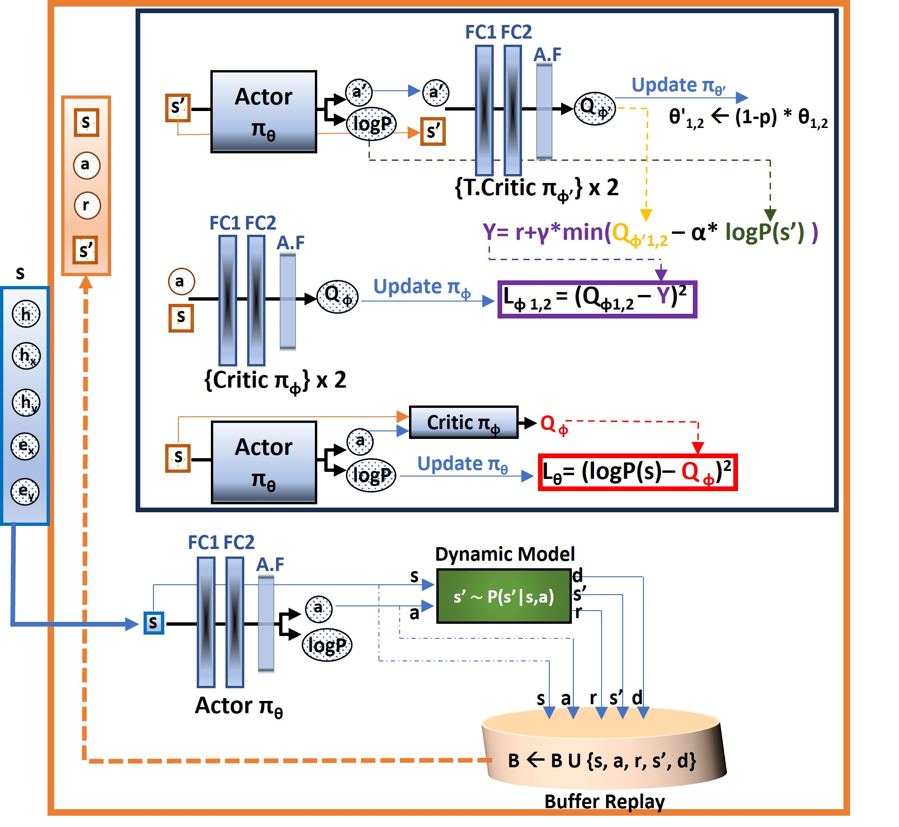
Developed a novel Cascaded Deep Reinforcement Learning (CDRL) approach to optimize low-thrust spacecraft trajectory planning, significantly improving time-efficient orbit transfers in complex multi-body environments for transfers to GEO and NRHO.
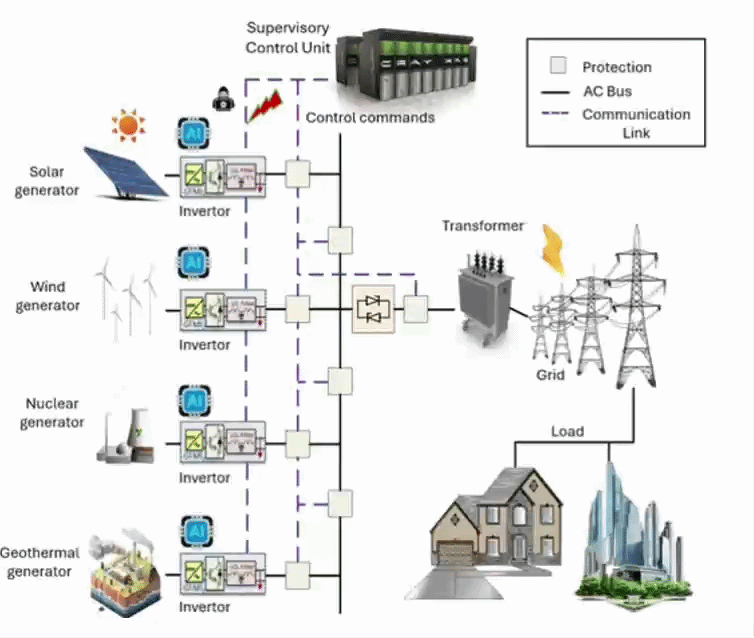
Introduced a resilient neural coordination framework for grid-forming inverter networks that maintains stability and coordination under cyberattacks in smart-grid environments.
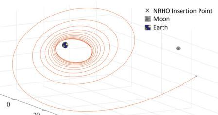
Developed a machine-learning-assisted method for optimizing low-thrust orbit-raising trajectories, integrating a sequential algorithm with a neural network-based high-level planner and benchmarking it against deep reinforcement learning approaches for geostationary and halo-orbit missions.
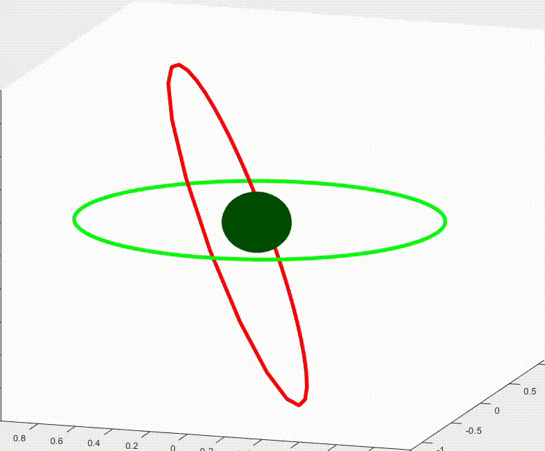
Developed a cascaded DRL model for optimizing long-duration, low-thrust spacecraft transfers from GTO to GEO. Guided by a gradient-aided reward function, the method significantly reduces transfer time and improves spacecraft autonomy in complex multi-revolution transfers.
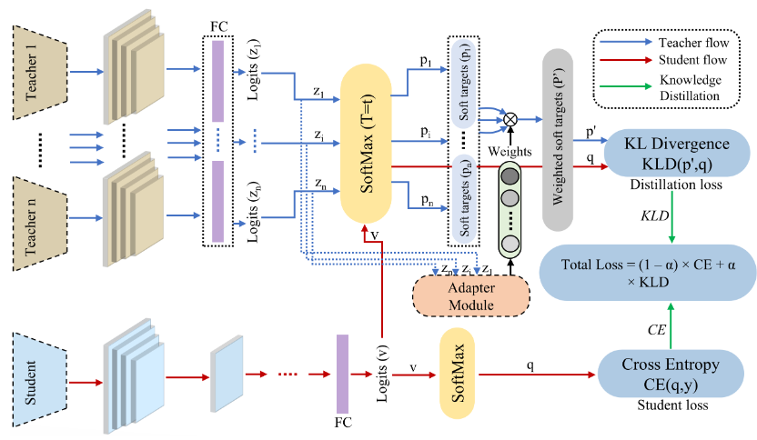
Adaptive multi-teacher knowledge distillation framework aimed at improving adversarial robustness beyond standard single-teacher or conventional training approaches.
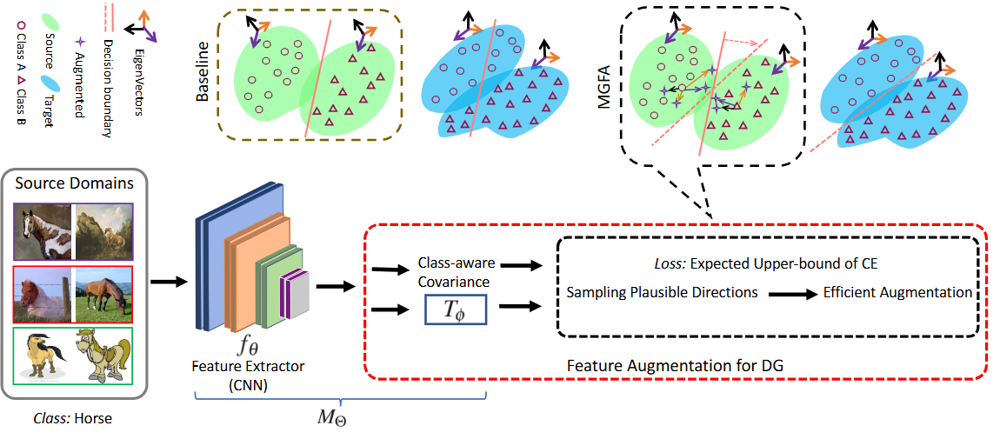
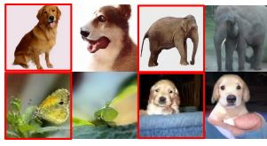
Proposed a simple and efficient domain generalization approach that augments source domains by exploring dominant modes of variation in the feature space, improving generalization to unseen domains across standard DG benchmarks.
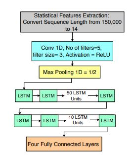
Developed and compared machine learning models for laboratory earthquake prediction using LANL data, where CNN-LSTM models improved time-to-failure prediction over hand-crafted approaches.

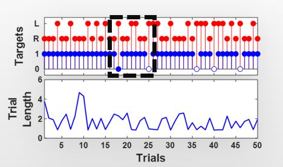
Demonstrated trajectory-based neuroprosthetic control in rodents using primary motor cortex activity, providing a cost-effective platform for studying brain-machine interfaces and neural control.